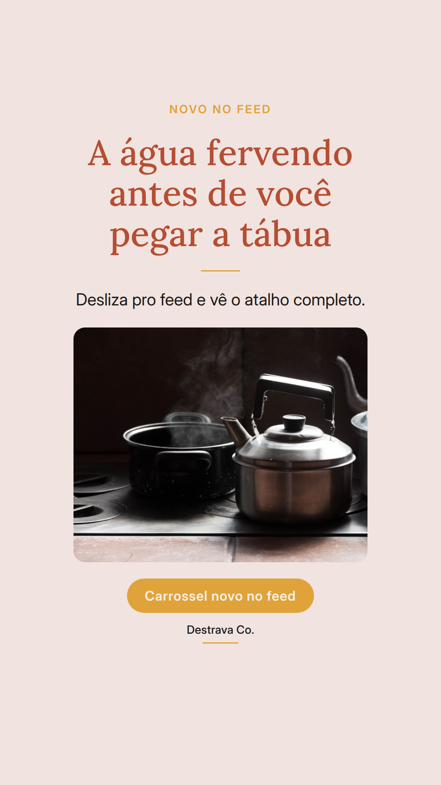
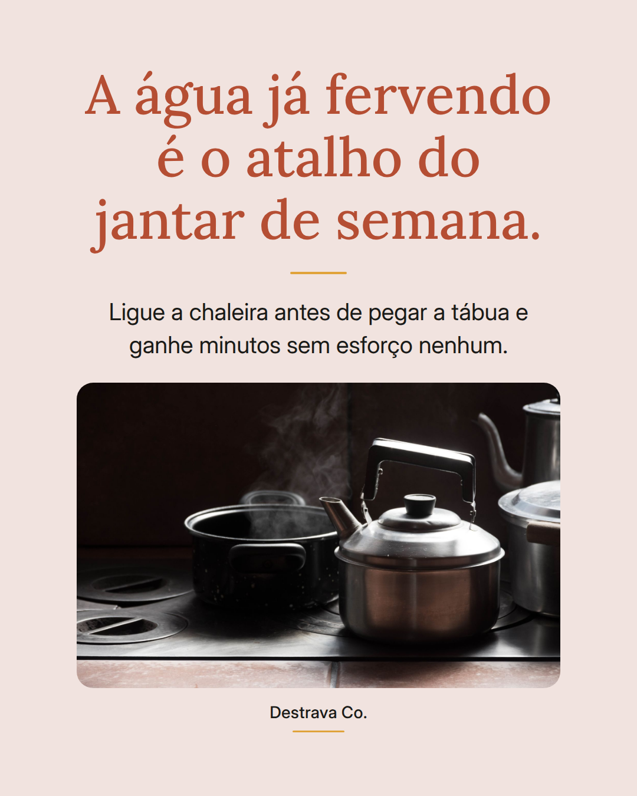
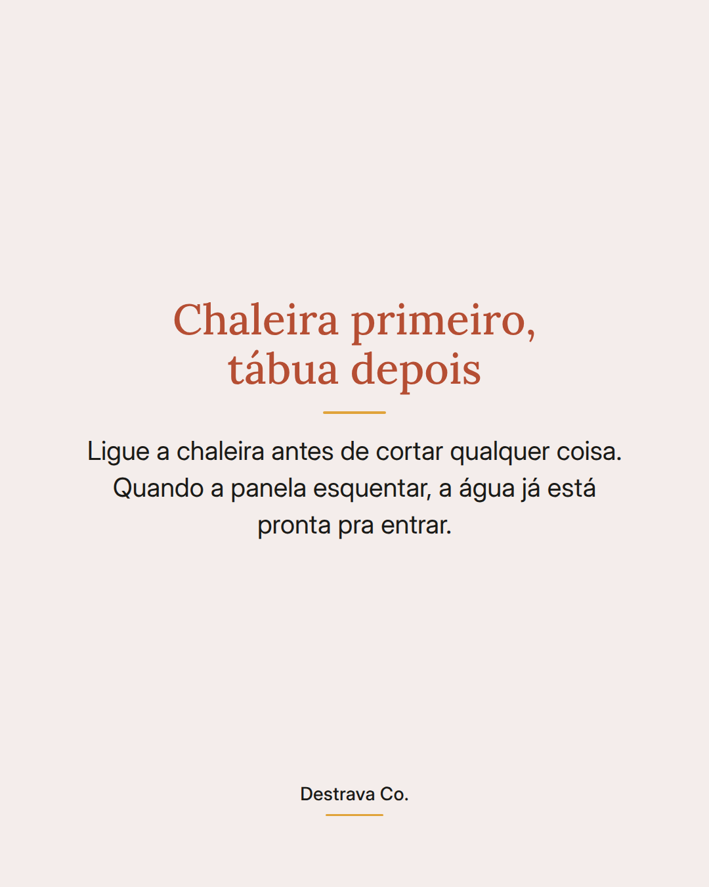
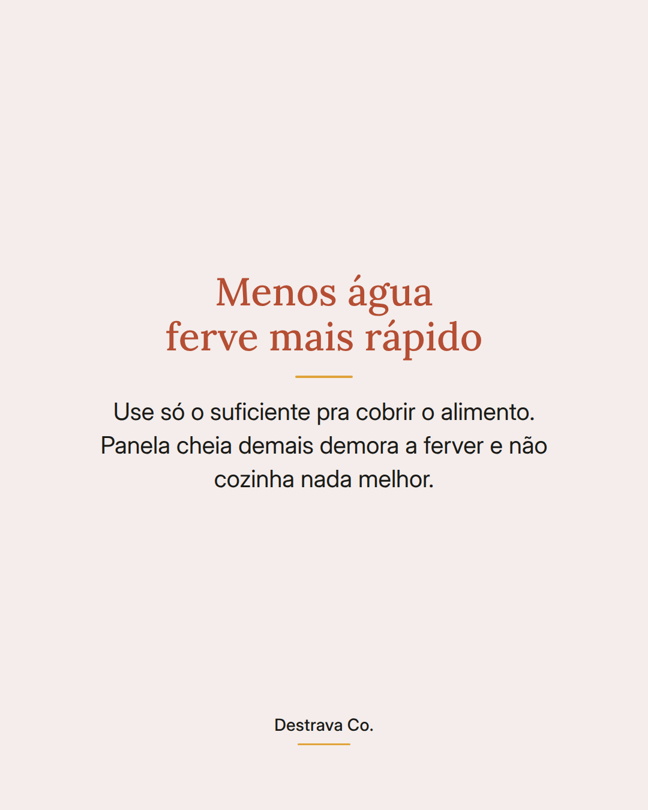
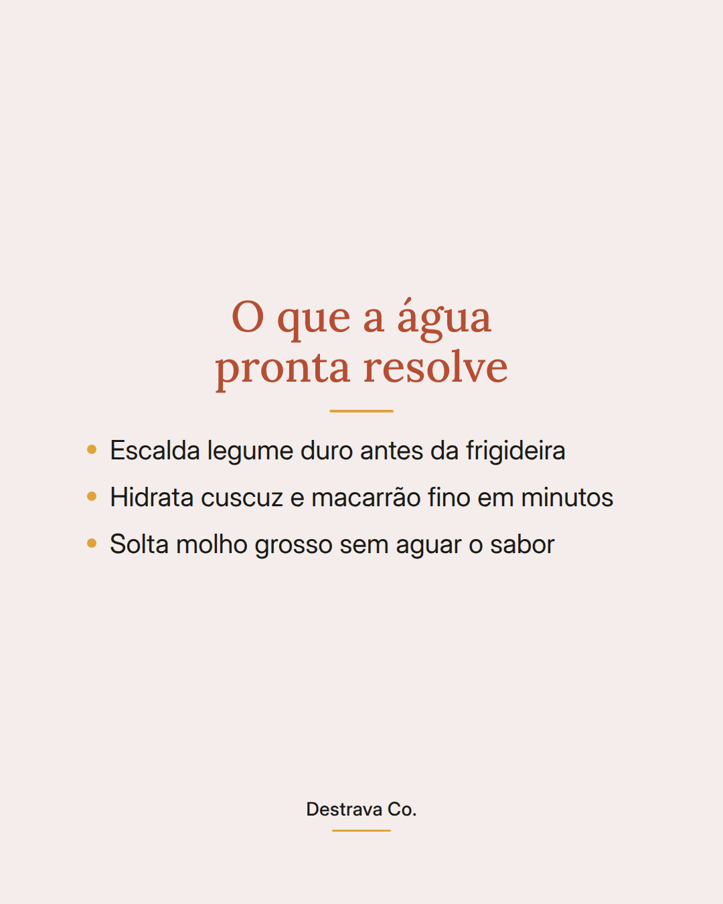

Jantar rápido começa antes do fogo: com a água já fervendo.
Parece bobo, mas é o passo que mais encurta a receita de dia corrido.
A chaleira ferve mais rápido que a panela e trabalha sozinha enquanto você corta o resto. Quando a frigideira esquenta, a água já está lá, pronta pra cozinhar a massa, escaldar o legume duro ou hidratar o cuscuz.
E um detalhe que quase ninguém conta: água demais só atrasa. Cubra o alimento e pronto.
Salva pra lembrar na próxima correria e manda pra quem chega em casa sem ideia do que fazer. Se quiser as 20 receitas rápidas até 15 min em PDF, elas estão esperando no meu perfil.